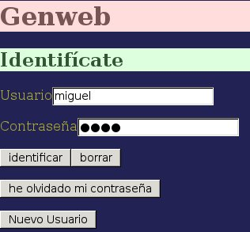

El acceso al GenWeb está controlado por una página de identificación mediante usuario y contraseña. Más que restringir el acceso, este control pretende organizar los datos identificando a cada usuario y mostrándole únicamente sus proyectos, sus caracteres, o los caracteres que se hayan definidos como públicos, de manera que los datos generados por cada usuario no se mezclan con los de los demás.

La página de acceso incluye botones para enviar las credenciales, borrar los campos de datos, crear un nuevo usuario o solicitar una nueva contraseña.